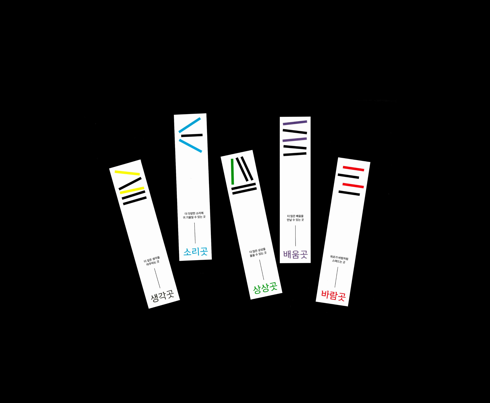
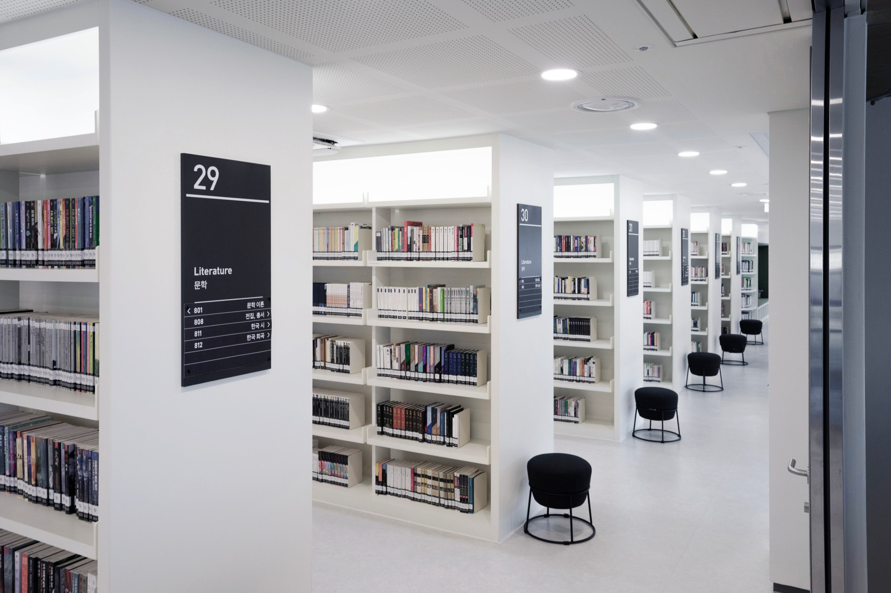
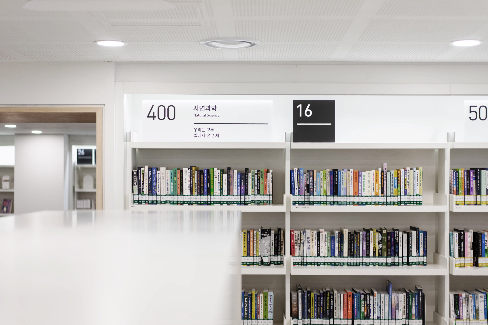
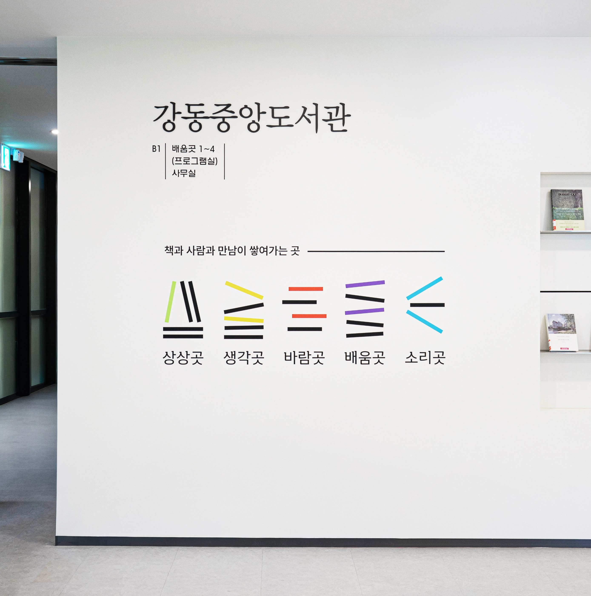
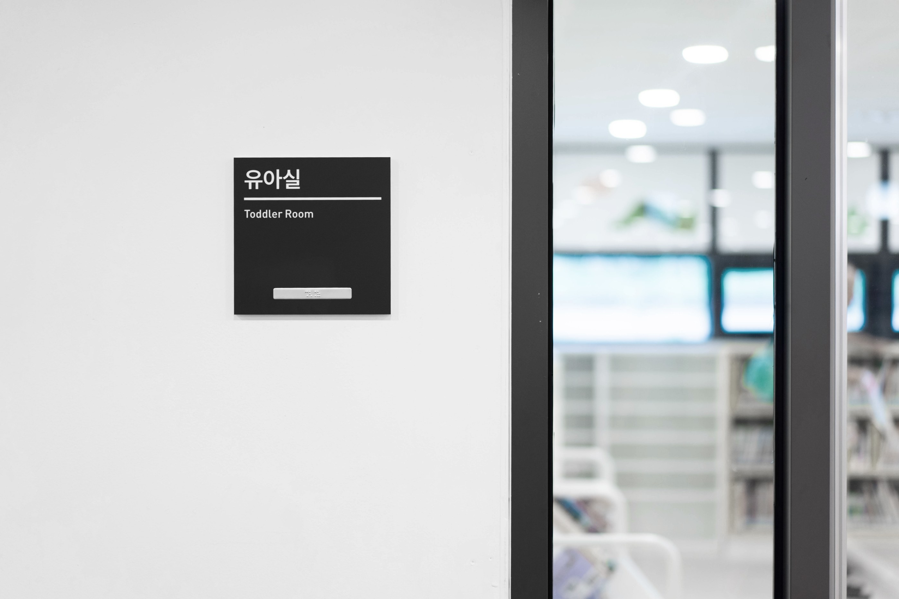
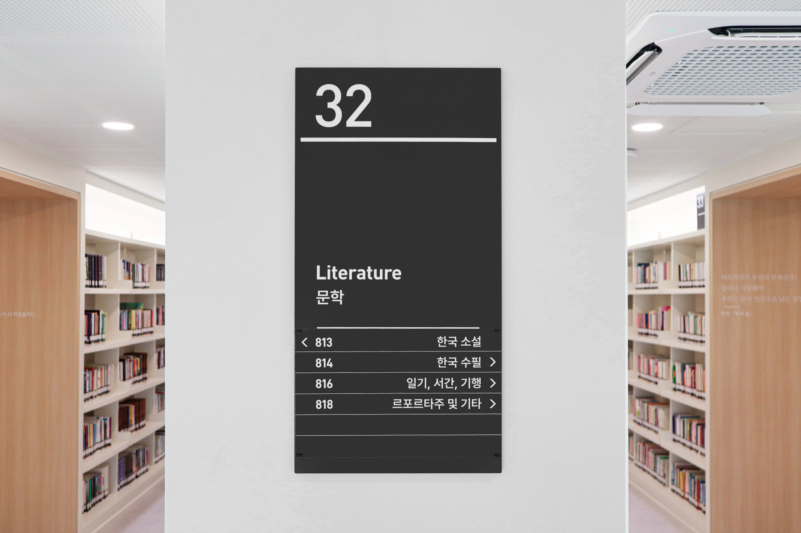

Signage
Gangdong Central Library
2025
강동중앙도서관은 강동구에 새롭게 조성된 4층 규모의 시민 도서관으로 장서 수가 12만 권에 달한다. 이 규모의 장서를 효율적으로 찾기 위한 사이니지 시스템을 디자인했다. 즉흥적으로 길을 찾는 이용객보다 도서의 위치를 알고 목적지로 향하는 이용객을 타겟으로, 서가의 분류보다 숫자와 체계를 강조했다.
사이니지는 서가와 대비되는 블랙 컬러로 적용하고 서가번호 레이아웃을 구분하는 가로 라인을 강조했다. 이 라인 그래픽은 쌓여 있는 책을 은유하는 그래픽으로 확장되어 간판과 홍보물에 적용되었다. 서가분류판의 하부는 자석판과 종이로 제작해 그때그때 교체할 수 있게 만들었다.
Gangdong Central Library is a new four-storey public library in Gangdong-gu holding around 120,000 volumes. We designed a signage system that makes a collection of this size easy to search. The system targets visitors who already know where their book is rather than those browsing, so it stresses numbers and structure over shelf categories.
The signs are black to contrast with the shelves, with horizontal lines that separate the shelf-number layout. The line graphic extends into a metaphor of stacked books and is applied to the signboard and promotional material. The lower part of each shelf panel is made of magnet board and paper so it can be replaced whenever books move.
- Category
- Signage
- Duration
- 3개월 / 3 months
- Company
- SOAP
- Client
- 강동문화재단 / Gangdong Cultural Foundation
- ROLE
- Project manager





